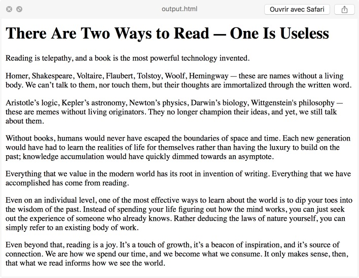

In a previous article, we discussed how to use python and urllib to scrape the web. In this article, we will see how the BeautifulSoup library replaces regexes to handle html content and empowers our scraping abilities. BeautifulSoup is a Python library for pulling data out of HTML files. Basically, it parses the file into a python data structure that we can easily navigate using smart search functions. In a previous article about webscraping, we defined the function get_html(url) to fetch an html file from the web. Then, we used regular expressions (regexes) to extract all the url from the file. Let’s see how we can use BeautifulSoup to do the same thing before moving on to more interesting tasks. Get the library As always, installing the library is dead easy using pip. pip install beautifulsoup4. Parse HTML content Here’s how to create a beautifulSoup object from an HTML string. from bs4 import BeautifulSoup # use the `get_html` function defined in my previous article html_content = get_html(url) soup = BeautifulSoup(html_content, 'html.parser') The easiest thing to do is to print the html with proper indentation. print(soup.prettify()) CSS Selectors The most useful function, in my opinion, is the select method that allows you to find any html element just like you’d do to style it with in CSS. For instance, here is how to find all the <a href="url"> links in the file. a_tags = soup.select('a[href]') href_urls = [a['href'] for a in a_tags] print(href_urls) >>> ['http://www.google.com/', 'http://www.google.com/privacy/', ...] The documentation for css selectors is here. select('a') will find every element between the tags <a> ... </a>. In order to ensure the tag contains an href target, we can ask for exsitance of the attribute with select('a[href]'). That’s what we did above. FindAll There is a very similar function, findAll (or find_all in the new version) (documentation) that lets you use tag names or compiled regexes directly. For instance : import re soup.find_all(re.compile("(a|div)"), recursive=True) This function shines thanks to its second optional argument recursive=True. When it is set to True, the function searches within the current node’s decendants (children and subchildren, etc.), when set to False it only searches within the current node’s children. This is particularly usefull when you want to know how many paragraph a given dom element contains. Finding text Here is a simple technique to find the actual content of a webpage. This is not a one-size-fits-all script, and it’s likely that you will need to tailor your script to the kind of website you want to scrape. But I’ve had decent result with this one. It works on medium.com. The idea is that the principal content is located in a div (or similar) where most of the paragraphs are. So let’s select every paragraph, find the dom elements that contain them and keep the one that contains most of them. # Find every paragraph ps = soup.select('p') # Find the html tag that contains each paragraph parents = [p.parent for p in ps] # For each parent, count how many child paragraphs it contains def count_child_paragraphs(element): return len(element.findAll('p', recurvise=False)) # Keep the parent with the biggest number of paragraphs parents.sort(key = count_child_paragraphs, reverse=True) # That's where the page main content should be located : main_div = parents[0] Sometimes, the main title is contained in a special “header” div, so we can try to find it and insert it at the beginning of our main_div. To insert a tag in another, the function is simply parent.insert(child, position): if not main_div.findAll('h1'): titles = soup.findAll('h1') if titles: main_title = titles[0] main_div.insert(0, main_title) Finally we can export the text to a new file: with open('output.html', 'w') as file: file.write(str(main_div)) Running this script on a random article on medium.com, here’s a preview with the first few paragraphs.  Putting it all together Here’s the final code.
Other articles you might like: Pause and restart a python script using Pickle Scraping basics with python3 and urllib This section is under construction Keyboard shortcut and command line utility to switch display (Windows)